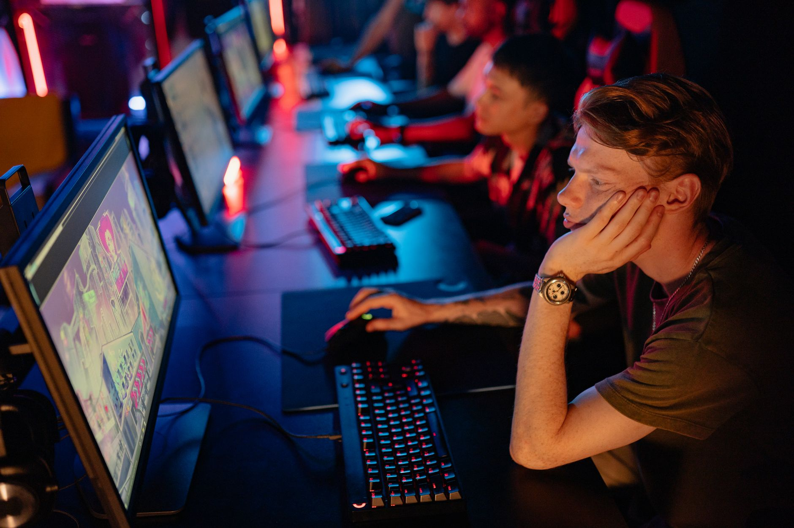

A familiar face returns to the roster
In a move that has sent ripples through the professional Counter-Strike 2 community, Monte has officially announced the return of sdy to their active lineup. This decision marks a significant turning point for the organization as they look to solidify their position among the world's elite teams. For fans of the team, this news feels less like a new signing and more like a homecoming for a player who understands the core identity of the squad.
The reintegration of sdy comes at a crucial time in the competitive season. As teams scramble to refine their strategies and chemistry for upcoming major tournaments, Monte is betting on the existing synergy that sdy brings to the table. Instead of undergoing the lengthy and often unpredictable process of integrating a completely new player, the organization is leveraging proven talent and established communication channels.
Analyzing the impact on team performance
sdy has long been recognized for his exceptional mechanical skill and tactical flexibility. His ability to hold critical angles and deliver high-impact frags in high-pressure situations is exactly what Monte needs to climb the global rankings. By bringing him back, the team is not just adding a player; they are adding a layer of stability that was previously missing during their recent transitional period.
Beyond individual statistics, the impact of his return can be categorized into several key areas of gameplay:
The strategic reasoning behind the move
Roster changes in esports are often reactive, but the decision to bring sdy back to Monte appears to be highly proactive. The organization has clearly identified that their previous attempts at roster experimentation did not yield the desired results in terms of tournament placement. By returning to a known quantity, Monte is minimizing the risk of chemistry breakdown and maximizing their immediate competitive output.
Bringing sdy back into the fold is about more than just talent; it is about reclaiming our competitive edge and returning to the level of play we know we are capable of achieving on the big stage.
This strategic pivot allows the coaching staff to focus on refining existing playbooks rather than teaching a newcomer the fundamental nuances of the team's style. It provides a foundation of trust that is essential when facing top-tier opponents in intense, best-of-three series.
Looking ahead to the upcoming season
With sdy back in the starting five, Monte's schedule looks increasingly daunting for their rivals. The team is expected to participate in several high-stakes online and LAN qualifiers that will determine their eligibility for the next major CS2 events. The eyes of the community will be on every match to see if this reunion translates into a higher win rate and deeper tournament runs.
Analysts suggest that if Monte can maintain their practice discipline, they could easily break into the top 15 of the HLTV rankings within the next few months. The combination of veteran leadership and sdy's aggressive playstyle creates a balanced ecosystem that is difficult to prepare against.
Staying ahead with esports data and insights
As roster moves like sdy's rejoin Monte continue to reshape the professional scene, staying informed through deep data analysis becomes more important than ever. Understanding how individual player movements affect team win percentages and map control requires access to high-quality, granular information. For fans and analysts alike, the ability to track these shifts in real-time is the difference between guessing and knowing.
If you want to dive deeper into the metrics that drive these professional changes, you should check out our recent coverage on the HLTV Brain Closed Beta Launch: A New Era for CS2 Data at https://dhyey.bond/blog/hltv-brain-closed-beta-launch-a-new-era-for-cs2-data/. This resource provides the context needed to understand the evolving landscape of competitive Counter-Strike.
Monte's journey with sdy is just one chapter in a much larger story of evolution within the CS2 ecosystem. Whether they succeed in their quest for silverware or struggle to find their rhythm again, the impact of this move will be felt throughout the entire professional circuit.
See Also
If you enjoyed this Esports News article, check out HLTV Brain Closed Beta Launch: A New Era for CS2 Data for more useful reading.